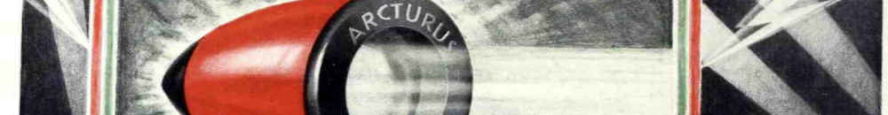

Reality always makes sense because it is reality. When our ideas of it do not correspond to it, it’s the ideas that are suspect.
Insofar as our understanding involves a mapping of the fluid reality to fixed ideas, we will always end up confused when refusing to let go of fixed ideas that have lost their relevance.
Staying flexible in thought is a form of mental hygiene.